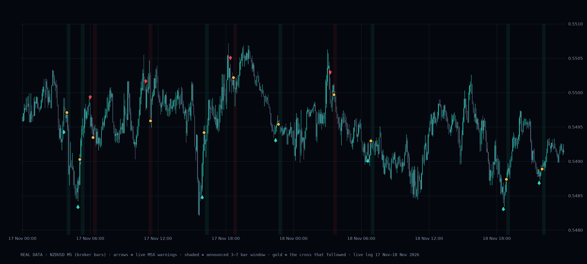
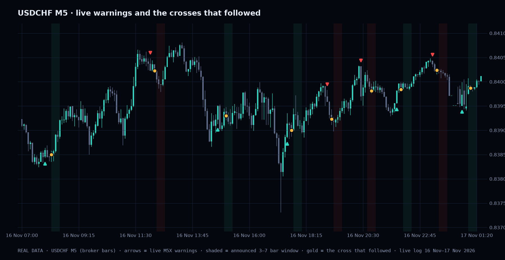
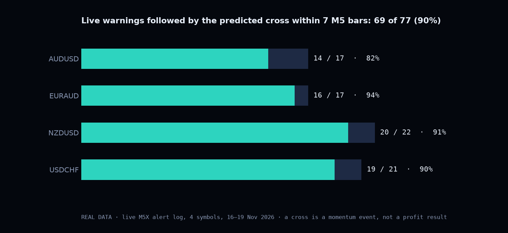

HLCI · 5-year market memory
On every closed M5 bar, HLCI compares the market with 100 of the most similar moments from five years of the same symbol — and reads what happened next. Only causal data: nothing from the future, ever.
3BAR ABI_PLUS 2.0 · PRE-CROSS INTELLIGENCE · METATRADER 5
A MetaTrader 5 indicator that warns you 3 to 7 M5 bars before the momentum cross — and only when five years of the symbol's own history agree. You stop reacting. You start waiting at the right place.

THE PROBLEM
By the time momentum visibly turns, the best part of the move is often already printed. Pre-Cross was built to give you those missing minutes — with numbers, not hope.
HOW IT WORKS
On every closed M5 bar, HLCI compares the market with 100 of the most similar moments from five years of the same symbol — and reads what happened next. Only causal data: nothing from the future, ever.
A machine-learning model trained on two years and four symbols estimates, bar by bar, the probability that the M5 momentum cross is 3 to 7 bars away.
M5X speaks only when HLCI's historical memory confirms the direction. Then you get an arrow on the chart, a popup, a sound and a push to your phone — with the exact time window.
PROOF, NOT PROMISES
Every image below is drawn from real broker bars and the live alert log of 16–19 November 2026. Nothing is simulated.



Honest reading: a warning predicts a momentum cross, not a guaranteed price move or profit. Some crosses arrive earlier than the window, some later, a few never. We show them all.
ON YOUR CHART
PROFESSIONAL LICENCE
USD 320
one payment · no subscription
Buy now Ask a question firstUSDT (TRC20 / BEP20) · Bitcoin · Ethereum · card-to-card (Iran)
QUESTIONS
No. A warning is issued on a closed M5 bar and stays exactly where it was drawn. Its result — early, in the window, late or no cross — is recorded honestly on the panel.
In the two-year test 75.6% of 2,709 warnings were followed by the cross in the exact 3–7 bar window; in 2026 data, 77.3%. Live, 69 of 77 warnings saw the cross within 7 bars. It is a probability, not a certainty.
No. It analyses and alerts. It never opens, closes or modifies an order.
EURAUD, AUDUSD, NZDUSD and USDCHF — each has its own 5-year database. The model works on M5; marks are drawn on any chart of the symbol, M1 recommended.
After your payment is confirmed you receive the package, the guide and a licence key for your MT5 account — usually within one business day.
Yes, a transfer to another MT5 account is possible on request through support.
Refund requests are made through support with your order details and are reviewed individually.
No. Read the guide, look at the real results above, and ask us anything before you buy.
Be there before it prints.
Trading involves substantial risk. 3BAR ABI_PLUS analyses and alerts; it does not give investment advice and never places trades. Past and live statistics describe momentum-cross warnings, not future profits.